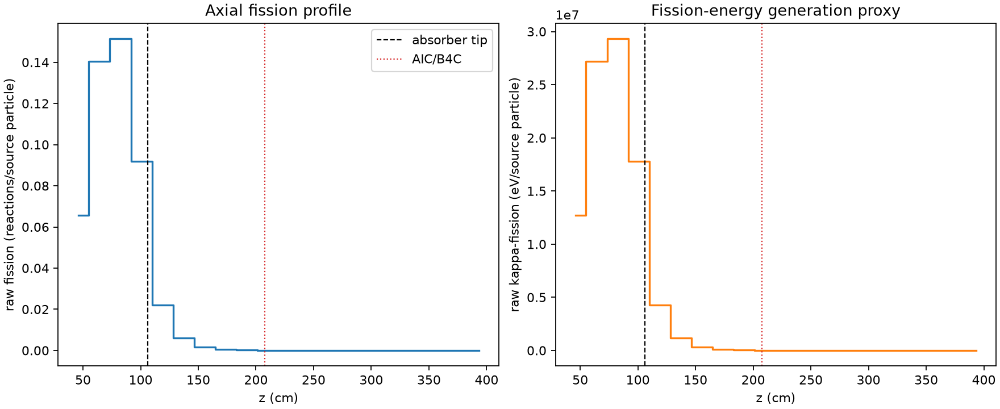
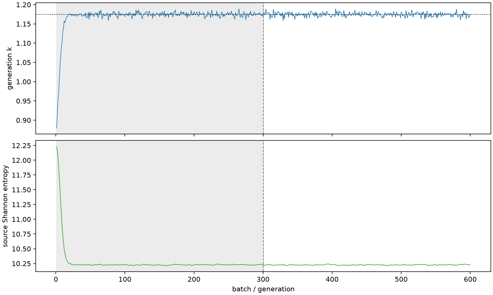

| field | value |
|---|---|
| experiment | V2-STAGE_128_OGRENCI_04-0007 |
| k | 1.174473757685226 |
| MC standard error | 0.00019525681499965402 |
| seconds | 932.9474656700004 |
| acceptance | not_assessed |
| convergence | review_required |
Completed is output integrity only; physical and statistical review required. Zero tallies do not prove zero production or zero uncertainty.
| diagnostic | value |
|---|---|
| geometric fuel voxels | 5280 |
| zero fission tally voxels | 1941 |
| low signal fuel voxels | 2909 |
| low signal fission share | 8.713830370571217e-05 |
| low signal kappa share | 8.716807741590949e-05 |
| important fission share | 0.950046144395098 |
| previous filter included | 2371 |
| duration estimate s | 1562.5173488400023 |
| actual minus estimate s | -629.569883170002 |
| fission relative MC error | statistics |
|---|---|
| all_geometric_fuel | {"voxels": 5280, "positive_mean_voxels": 3339, "zero_mean_voxels": 1941, "undefined_relative_error_voxels": 1941, "median": 0.04043333161967242, "p95": 0.9499051631028059, "maximum": 1.0000000000000002} |
| low_signal | {"voxels": 2909, "positive_mean_voxels": 968, "zero_mean_voxels": 1941, "undefined_relative_error_voxels": 1941, "median": 0.5512403988190762, "p95": 1.0, "maximum": 1.0000000000000002} |
| important_95pct | {"voxels": 1118, "positive_mean_voxels": 1118, "zero_mean_voxels": 0, "undefined_relative_error_voxels": 0, "median": 0.005398525128246584, "p95": 0.010247650479718847, "maximum": 0.012520385288299131} |
| outside_previous_filter | {"voxels": 2909, "positive_mean_voxels": 968, "zero_mean_voxels": 1941, "undefined_relative_error_voxels": 1941, "median": 0.5512403988190762, "p95": 1.0, "maximum": 1.0000000000000002} |
| kappa_fission relative MC error | statistics |
|---|---|
| all_geometric_fuel | {"voxels": 5280, "positive_mean_voxels": 3339, "zero_mean_voxels": 1941, "undefined_relative_error_voxels": 1941, "median": 0.04037922633633958, "p95": 0.9498035638562138, "maximum": 1.0000000000000002} |
| low_signal | {"voxels": 2909, "positive_mean_voxels": 968, "zero_mean_voxels": 1941, "undefined_relative_error_voxels": 1941, "median": 0.5503753687263817, "p95": 1.0, "maximum": 1.0000000000000002} |
| important_95pct | {"voxels": 1118, "positive_mean_voxels": 1118, "zero_mean_voxels": 0, "undefined_relative_error_voxels": 0, "median": 0.005392347302242717, "p95": 0.010235867850879208, "maximum": 0.012506041515167972} |
| outside_previous_filter | {"voxels": 2909, "positive_mean_voxels": 968, "zero_mean_voxels": 1941, "undefined_relative_error_voxels": 1941, "median": 0.5503753687263817, "p95": 1.0, "maximum": 1.0000000000000002} |
| axial bin | fission share | kappa-fission share |
|---|---|---|
| 1 | 0.13706842569108588 | 0.1370700678645658 |
| 2 | 0.2928398402082292 | 0.2928301036293806 |
| 3 | 0.31569152135576795 | 0.31568034769194236 |
| 4 | 0.19167951031313601 | 0.19168010887695383 |
| 5 | 0.04576317130957693 | 0.04577661784599266 |
| 6 | 0.012352239147393656 | 0.012356004229972822 |
| 7 | 0.003355993276366819 | 0.003357048222989079 |
| 8 | 0.00091904074627054 | 0.0009193266074777254 |
| 9 | 0.000247754337083789 | 0.00024784271708845786 |
| 10 | 6.438485802672476e-05 | 6.440610146358098e-05 |
| 11 | 1.4410559353194443e-05 | 1.4417437855784915e-05 |
| 12 | 3.3268428591290245e-06 | 3.3273170373435877e-06 |
| 13 | 3.4051783809687127e-07 | 3.406689324048327e-07 |
| 14 | 4.083701210784024e-08 | 4.078834735350897e-08 |
| 15 | 0.0 | 0.0 |
| 16 | 0.0 | 0.0 |
| 17 | 0.0 | 0.0 |
| 18 | 0.0 | 0.0 |
| 19 | 0.0 | 0.0 |
| 20 | 0.0 | 0.0 |
Histories include the inactive-to-active transition at batch 300. kappa-fission approximates fission energy production, not total heat deposition.

